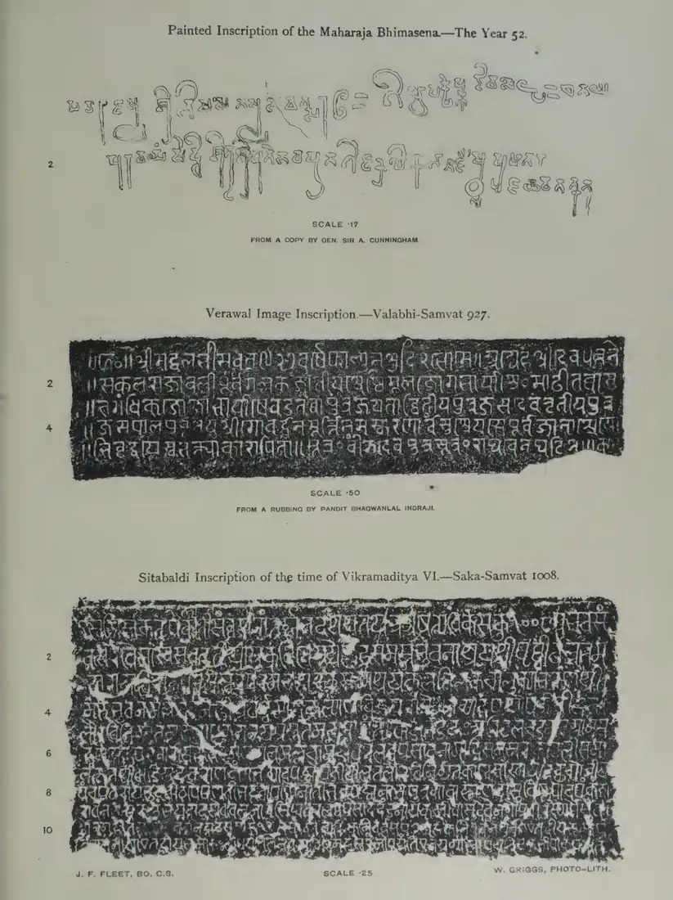

Tidgundi plates of the time of Vikramâditya VI. ; [Châlukya-]Vikrama-Saṁvat 7
TIDGUNDI PLATES OF THE TIME OF VIKRAMADITYA VI.;
[CHALUKYA-]VIKRAMA-SAMVAT 7.
These plates were found, about thirty-five years ago, at the village of Tidgundi, about twelve miles north of the city of Bijâpur, in the Bijâpur tâlukâ of the Bijâpur district of the
1 Originally °râjyêh appears to have been engraved. The following sign of punctuation is superfluous.
2 Read -vinirggatô and -prasûtô.
3 This word chadaka is not Sanskrit; it probably is connected with the root chat, 'to break,' and apparently the whole biruda is equivalent to aribalanjshudana. Compare also the Marâthî chadaka, 'a slap, a stroke.'
4 Nâman is quite superfluous here; its sense is contained in the following samastarâjâvalî.
5 Read -rânakah; but the word in the whole phrase, beginning with tatpâdapadm-ôpajîvî in line 4, should really have been put in the Locative. The following sign of punctuation is again superfluous.
6 This word and the following words in the Nominative case, qualifying as they do Vâsudêvêna in line 9, should have been put in the Instrumental.
7 This sign of visarga was originally omitted.
8 Read -sâkhâyâm, or perhaps rather -sâkhtyô.
9 Read °rtyô.
10 Pañatî and nîttî in the following compound are clearly closely related to and synonymous with the Marâthî pañatû, 'great-grandson,' and nâtû, 'grandson;' the Sanskrit words would be pranaptâ and naptâ.
11 The first akshara of this name might also be read vvô or, perhaps, ghô; the last akshara was originally pau, but has been altered to pai.
12 Read -putrô.
13 On the termination u of this and of some of the following words see my remarks on page 304 above.
14 The akshara in brackets may possibly be syê. I do not understand the exact meaning of this compound; perhaps it has reference to religious observances on the 12th day (dvâdaâtî) of the two halves of the month.
15 Read Nârasimhao.
16 Intended for grihitâni bhûmi-nivarttanâni dvâdaśa. On the construction of the pumerals here and below compare Ind. Ant. Vol. XVI. p. 207.
17 Probably intended for êtâ bhûmayah pratipâditâh.
18 Read êtâ bhûmtr=yê lôpayanti tê Brahma-Vishnu-Mahêsvarâmîl=lôpayanti | êram yô gâ lôpayati sa kumbhipâkê patati ||
Plate 1 is bound after this page.
Bombay Presidency; and they were recently in the possession of the late Mr. Sh. P. Pandit, who has published a translation of the inscription which they contain, with a lithograph of the text, in the Indian Antiquary, Vol. I. p. 80 ff. I edit the inscription from two excellent impressions, supplied to me by Dr. Fleet.
These are three copper-plates, the second of which is engraved on both sides, while the others are so on one side only. Each plate measures about broad by high. The edges of the plates are fashioned thicker, so as to serve as rims to protect the writing, and the writing in consequence is in a perfect state of preservation throughout. The plates are strung on a ring, which had not been cut when this record came into Dr. Fleet's hands. This ring is about in diameter and thick, and holds a circular seal, about in diameter. The seal contains, in relief on a countersunk surface, in the centre a lion or tiger, standing to the proper right, with the head turned to the front; above it, in the middle the moon, on the left the sun, and on the right an open right hand, held up with the palm to the front; beneath the lion or tiger, from the right to the left, a straight sword or dagger, a palm-tree (?), a. cobra, standing on the tip of its tail, with the hood expanded, and a svastika; the short turn-backs of which are going the wrong way. The weight of the three plates is tolas, and that of the ring and seal tolas; total, 661 tolas.—The size of the letters is between and . The characters are Nâgarî; they include the sign of the upadhmânîya, in the word vâḥpa, in line 28. The language is Sanskrit; but the birudas in lines 32 to 39 have the terminations of the Kanarese nominative case (anu, âm or a),1 and the text contains, in addition to some Kanarese proper names, five words which are Kanarese, adata, l. 34, baṇta, l. 36, bêṇtekâra, l. 35, and manneya and sâmya, l. 42. The inscription opens with three verses glorifying, or invoking the blessing of, the gods Vishnu and Śiva, and ends with one of the ordinary imprecatory verses, and it also contains two verses in lines 24-32 and one verse in lines 40-42; the rest is in prose. As regards orthography, ri is generally2 employed instead of the vowel ri, and b is always denoted by the sign for v; the dental sibilant is often used instead of the palatal, and the palatal twice instead of the dental (in sahaśra, l. 16, and śva-dattâm, l. 48); and the word êsha is written yêsha in line 25 (and was so written originally also in line 26), and tâmra—tâmvra in line 48. As regards the inscription in general, it may be noted that the main part of it, from line 8 to line 44, consists really of a single sentence, but that this sentence is broken up by the insertion of descriptions of the two personages chiefly concerned, which, rather oddly, are worded just as an independent document or order of either would be expected to commence.
The inscription refers itself to the reign of the Western Châlukya Tribhuvanamalladêva3 (Vikramâditya VI.); and records that, on a date which will be given below, a dependent of Tribhuvanamalla, the Mahâmandalêvara king (mahîpati) Muñja—a son of Sindarâja, who was the eldest son of Bhima, the governor of the Pratyaṇdaka-Fourthousand; of the Sinda vamśa—sold the Vâyvada group of twelve villages, with the exception of the village of Takkalikâ, to another dependent of Tribhuvanamalla, the Mahâsâmanta Kannasâmanta. Of both the vendor and the purchaser a large number of birudas are enumerated in the text; here it will suffice to draw attention to the titles of Muñja, a few of which may hereafter perhaps turn out to be of some historical importance.
The date on which the above sale is stated to have taken place, is 'Sunday, the first of the bright half of Kârttika, when six years of the glorious Vikrama time had elapsed, in the seventh current year, the year Dundubhi.' The era here employed is more commonly described
1 [Rêvaṇadêvan=aûkakâra in line 36 contains the Kanarese genitive 'dêvana; on aûkaktra, 'a champion,' see Dr. Fleet's Kanarese Dynasties, p. 41; Ind. Ant. Vol. XV. p. 276 f.; and von Böhtlingk's Abridged Dictionary, s. v. अङ्कार. Baṇtara in the same line is the gen. plur. of baṇta.—E. H.]
2 Originally the vowel ri was throughout written by the syllable ri, but the mistake has been corrected perhaps three times.
3 See page 305 above, note 1.
by the phrase Châlukya-Vikrama-varsha, and the seventh year of it, the year Dundubhi, should correspond to Śaka-Samvat 1004 expired.1 But the date does not work out satisfactorily either for this year or for the years immediately preceding and following it; for the first tithi of the bright half of Kârttika ended, in Śaka-Samvat 1003 expired on Wednesday, the 6th October, A.D. 1081, and in Śaka-Samvat 1004 expired on Tuesday, the 25th October, A.D. 1052; and in Śaka-Samvat 1005 expired it commenced 0 h. 9 m. before mean sunrise of Saturday, the 14th October, A.D. 1083, and ended 2 h. 29 m. before the end of the same day.
Of the localities mentioned, Takkalikâ, one of the group of the Vâyvađa-Twelve, may perhaps be the village of 'Takulkee,' about twelve miles north-west of the city of Bijâpur and fourteen miles south-west of Tiđgundi. Pratyandaka, after which the Pratyandaka-Fourthousand district was named, and the city of Bhôgâvati,2 from which Muñja took one of his birudas, I am unable to identify.
TEXT.3
First Plate.
| 1 | 4Jayaty=âvishkri(shkri)tam | Vishpôr=vvârâham | kshôbhit-ârnnavam | [[*]] | dakship-ô |
| 2 | nnata-dainshtr-âgra-viśrâinta-bhuvanam | vapuh | || | 6Vapur-dalana-sam̂bhramâ | |
| 3 | t=svanakha-ramdhra-nashtê | ripau | kva | yâta | iti vismayât=prahi |
| 4 | ta-lôchanas=sarvvatah6 | [[*]] | vri(vṛi)th=êti | kara-dhûnanê | nipatitam pau |
| 5 | rô7 rênuvan=nirîkshya8 | bhuvi | Dânavam | jayati | jâta-hâsô |
| 6 | Harih | || | 9Pâmđu-parîkaja-sam̂lîna-madhup-âlî-samam | ga | |
| 7 | lam. [[*]] yô | vi(bi)bhartti | vidhêyât=tê | nâ kapâlî sa | mam̂gâlam || |
| 8 | Svasti [[*]] | Samastabhuvanâśraya- | Śrî-Pri(pri)thvî-vallabha- | mahâ | |
| 9 | râjâdhirâja- | paramêsva(śva)ra- | paramabhattâraka- | Satyâ | |
| 10 | śrayakulatilaka- | Châlukyâbharana- | śrî-Trjibhuvanama- | ||
| 11 | lladêvasya10 | vijaya-râjyê | śrî-Kalyânapurê | va(ba)hu-divasa- |
Second Plate; First Side.
| 12 | sthira-nivâsini | pri(pri)thvî[m] | pâlayati | sati | śrî-Viku(kra)makâla- |
| 13 | samvatsarêshu | shatsu11 | atitêshu | saptamê | Dundubhi-samvatsarê prava- |
| 14 | rttamânê tasya | Kâ[r*]ttika-su(śu)ddha-pratipad-Âdivârê | [[*]] | Tatpâdapa- | |
| 15 | dm-ôpajîvinô | Muñja-mahîpatêr=anvayah | [[*]] | Pratyandaka-chatuhsa- | |
| 16 | haśra(sra)dês(ś)-âdhipatih | Sim̄da-vam̄sa(śa)-prabhavah12 | ranâm̄ganêshv=aga- | ||
| 17 | nita-bhîr=Bhîmô | nâma | tad-agrasutah | prakhyâta-kîrtti | |
| 18 | ranâm̄gan-ârjjit-ôrjita-jayaśrî-vallabhah | Sim̄darâ- | |||
| 19 | jô nâma | tat-sutasya | Mu[m]ja-mahîpatêh | prasa(śa)sti-sta[m]bhah || | Sva- |
| 20 | sti [[*]] | Samadhigatapainchamahâśavda(bda)- | mahâman̄dalêsvâ(śva)ram13 | Bhôgâ- | |
| 21 | vatipura-paramêsva(śva)ra- | Phanîmdra-vam̄sôdbhava- | Nâga-kulatilaka- |
1 See Ind. Ant. Vol. XXII. p. 109 ff.
2 Compare îbid. Vol. VIII. p. 6; Dr. Fleet's Kanarese Dynasties, p. 97; above, p. 231; and below, p. 316.
3 From impressions supplied by Dr. Fleet.
4 Metre: Slôka (Anushṭubh).
5 Metre: Prīthvî.
6 Originally =sârkvutah was engraved.
7 Originally purau was engraved, but the superscript line which turns ó into au has been struck out. Over the va of the following word there is a sign of anusvâra which has been struck out.
8 This akshara, kshya, looks rather like chchhya in the original.
9 Metre: Slôka (Anushṭubh).
10 In accordance with what follows, we should have expected here °dêrê, without vijaya-râjyê.
11 Read shatsv=.
12 Read °bhavô. In the following word the sign of anusvâra is engraved above ga, not above nâ.
13 Read °kvara-.
22 Simđa-kulakamalamârttanđa- Gunûka-vađavânala- mâmđalika-1
23 jagathâpa-2 nâmâvalî-samalamkri(krî)ta-3 mahâmanđalêsvara- śrî-Mumja-
24 râjadêvasy=âśirvvachanam=idam || Pûrvvam4 yô va(ba)lirâja-vam(bam)dhana-
vidhau dainyam ma-
Second Plate; Second Side.
25 nô mâ grahîn=n=âyam Vâmana yêsha6 Mumja-nîpatir=6bhûpâla-
chri(chû)đâmanih [[*]]
26 n=âpy=amgîkri(krî)ta7-kôla êsha8 jagatah pâtê chiram śatrubhih sô=
27 yam râjita-râja-râji-vijayî jîyân=mahî-vallabhah || Chitram Mu[m*]-
28 ja-mahîpatê tava ripu-svâmtê su-taptê=nisam tad-vâhp-âm-
29 vu(bu)dhi-bhî-karê vicharitum lôlâ cha9 kîrty-amganâ [[*]] â jñâtam
30 tvayi vidyatê śikhi-visha-stambh-âdi-vidyâ-va(ba)lam tê-
31 n=êyam 10Hima-sêtu-varti-ripu-samghât-âsu-samchâri-
32 nî || têna çha sva-manđala-madhyê || Svasti [[*]] śrî[h |*] Samadhiga-
33 tapamchamahâšavda(bda) mahâsâmaintam vîralakshmîkâmintam parava(ba)-
34 lakri(krî)tâinta11 12adaṭasâmaintaghanapatalavighaṭanapra-
35 bhamĵanam vairisâmaintagajakêsari13 sâmaintavê(bê)mṛekâram14 Ma-
36 garakîrttinavasâram15 va(ba)mṛara-bhâvam16 Rêvanadêvân=am[ka*]kâra
Third Plate.
37 patihitâchâ[r*]yan=achalitadhairya gôtrapavitram sujanai-
38 kamitram dharmma-Dharmm[â*]tmaja sâtya-Râdhêyam turaga-Rêvatam17 vikrâ[m]-
39 takamthîravam śrîma[t*]-Tribhuvanamalladêva-pâdârâdhaka- śrîma-
40 t-Kannâsâmaintah [[*]] tasy=âśirvvachanam=idam || 18Jîyâch=chhrî-Kanna-
41 sâma[m]tô Harapâd-ârchchana-priyah [[*]] Lâṭî-kuchataṭa-sparśî chi-
1 Originally manđalika was engraved, but the sign of î is struck out and that of the inserted î is faintly visible.
2 This (and not jagatpâpa) is the actual reading, the consonant of the third akshara being exactly like the th of orithêti in line 4. I do not understand the word, but believe that manđalika-jagathâpa must be similar in sense to the ordinary manđalika-bhairava.— [Perhaps we may correct gaja-tâpa, which would be synonymous with gaja-kûṭapâkala (Ep. Ind. Vol. I. p. 365, text line 14 f.) and kari-kûṭapâkala (Ind. Ant. Vol. XXI. pp. 121 and 343).— E. H.]
3 Originally samâlamkrita was engraved.
4 Metre: Śârdûlavikrîđita; and of the next verse. The words in the first Pâda do not admit of a proper construction; what the author meant to say apparently is: ysya manô dainyam n=âgrahît.
5 Originally yêshu appears to have been engraved; read êsha.
6 Originally nripatir= was engraved.
7 Originally kritta was engraved, but tta has been altered to ta, and perhaps kri also to kri.
8 Originally yêsha was engraved.
9 This cha may have been altered to tra in the original (lôl=âtra).
10 Originally himma was engraved.
11 Here a sign of anusvâra, which had been engraved above ta, has been clearly effaced; the preceding kri may have been altered to kri.
12 This, and not sabhaṭa, is quite distinctly the reading of the original; adaṭa is a Kanarese word, meaning 'a mighty, powerful, or heroic man.'
13 Originally sâmaintam was engraved.
14 Bêntekâra also is a Kanarese word, meaning 'a hunter, a sportsman.'
15 This is what was originally engraved, but the impressions clearly show that the two vowel-signs and the superscript, r of the word kîrtti have been struck out. What is intended I believe to be Makarâkêtunayasâra
16 Banṭa is a Kanarese tadbhara of the Sanskrit bhaṭa.
17 Read - Rêvaintam.
18 Metre: Ślôka (Anushṭubh).
| 42 | rām vairi-kri(kṛi)tâmtakah || | Tasmai | kraya-dâna-pûrvvakam1=âtmîya-ma.2 |
| 43 | nneya-[s]âmyam Vâyvada-dvâdasâ-grâmâ | dattâh3 | tan-madhyê Takkali- |
| 44 | k-âbhidhâna-grâmam varjayitvâ || | Tat-pradhânapurusha-śrî-Khambha- | |
| 45 | yya-nâyakah4 Madhukari-nâyakah | sāndhivigrahî ||5 | Bhammaiyya-nâ- |
| 46 | yakah6 Nimva(ba)ya-nâyaka | êtêshâm | puratah sāndhivigrahi-Nanna- |
| 47 | pai-pratihattêna7 likhitvâ8 śrî-Muñja-mahîpatinâ | Kannasâmantâ- | |
| 48 | ya ||9 sva-hastêna dattam=idam tâmvra-sâsanam10 || | Sa śl[ô]kah. || | |
| 11Śva(sva)-dattâm para-dattâm | |||
| 49 | vâ yô harêt=tu vasumdharâm | [[*]] | 12sha[sh]tîr=vvarsha-sahasrânim(ṇi) vishtâyâm13 |
| 50 | jâyatê krimih || | @ |
TRANSLATION.
(Line 1.) Victorious is the boar-incarnation of Vishnu,14 which agitated the ocean, (and) at which the Earth was reposing on the tip of his uplifted right tusk.
Victorious is Hari15 who— when the enemy, in terror of having his body torn, hid in a fissure of the god's nail— wondering where he might have gone, vainly cast his glances in all directions, and then broke into a smile when, on shaking his claws, he saw the demon fall before him on the ground, like a particle of dust.
May he,16 the wearer of skulls, who has a throat like a row of bees hovering on a white lotus, accomplish your happiness!
(L. 8.) Hail! In the reign of victory of the refuge of the universe, the favourite of Fortune, and of the Earth, the Mahârâjâdhirâja Paramêsvara Paramabhatṭâraka, the frontal ornament of the family of Satyâśraya, the ornament of the Châlukyas, the glorious Tribhuvanamalladêva, (while he,17) firmly residing for many days at the glorious city of Kalyâna, is ruling the earth; six years of the glorious Vikrama-time having elapsed, the seventh (year), the year Dundubhi, being current, on Sunday, the first of the bright half of Kârttika of this (year)18:—
(L. 14.) Of king Muñja, dependent on his19 lotus-feet, the lineage (is this): (There was) the governor of the Pratyandaka-Fourthousand country, born in the Sinda race, fearless on battle-fields, named Bhîma. His first-born, of renowned fame, a favourite of the mighty fortune of victory gained on battle-fields, was Sindarâja. Of his son, king Muñja, the column of praise (records):—
Hail! The Mahâmandalêsvara, the glorious Muñjarâjadêva, adorned with the titles 'he who has attained the five mahâsâbdas, the Mahâmandalêsvara, the supreme lord of the city
1 Originally -pûrvvakāmm= was engraved; read -pûrvvakām s-âtmiya- (?).
2 Manneya is a Kanarese word, meaning 'a respectable man, a chieftain, a commander,' and sâmya is a tadbhava of the Sanskrit svâmya.
3 Read dattâs=ta. Read -nâyakô.
5 This sign of punctuation is superfluous.
6 Originally Bhammaiya- was engraved; read -nâyakô.
7 Read 'hastêna.
8 One would have expected likhitam.
9 This sign of punctuation is superfluous.
10 Read tâmra-sâsanam. 11 Metre: Slôka (Anushṭubh).
12 Read shashṭim va.
13 Originally vishṭdyâh was engraved; read vishṭdyâm.
14 Literally, 'the boar-body of Vishnu, manifested.'
15 i.e. Vishnu as man-lion, fighting with Hiranyakaśi pu.
16 i.e. Śiva, whose 'throat is dark-blue from the stain of the deadly poison which would have destroyed the world, had it not been swallowed by him on its production at the churning of the ocean by the gods for the nectar of immortality.'
17 Compare page 308 above, note 10.
18 The principal idea which the author has in his mind and which runs through what follows, is, that 'on this day king Muñja sold to Kannasâmanta certain villages.'
19 i.e. Tribhuvanamalladêva's.
of Bhôgāvati, born in the serpent-chief's race, the frontal ornament of the Nāga family, the sun of the lotus—the Sinda family, the submarine fire of the Gunukas(?), the fever to the elephants—the rulers of districts;—the blessing pronounced on him is this:—
“In former days, it was not Vâmana whose heart, when he was engaged in subduing king Bali,1 faintness did not seize, it was this king Muñja, the crest-jewel of princes; nor did this king assume a boar's body, when the world had long been cast down by adversaries. Victory to him, the favourite of the Earth, the conqueror of rows of resplendent rulers!
“Marvellous it is that your Fame, king Muñja, is so eager to visit incessantly the burning hearts of your enemies which frighten (even) the ocean2 of their tears! Ah, I know, you possess the magic power of stopping fire, poison and the rest, and therefore she lightly wanders among the crowds of the enemies between the Himâlaya and (Râma's) bridge.”
And he in the midst of his territory—3
(L. 32.) Hail! Fortune! The illustrious Kannasâmanta, who worships the feet of the glorious Tribhuvanamalladêva, who has attained the five mahâsabdas, the great chieftain, the beloved of the fortune of heroes, the god of death to hostile forces, the hurricane to scatter the mass of clouds—mighty chieftains, the lion to the elephants—hostile chieftains, the hunter of chieftains, the fresh essence of the god of love, the passion of warriors, the champion of Rêvanadêva, the instructor in what is beneficial to his master, of unshaken firmness, the purifier of his family, the unique friend of good men, Dharma's son4 in righteousness, Râdhâ's son5 in truthfulness, a Rêvanta6 in (the management of) horses, a lion in prowess;—the blessing pronounced on him is this:—
“Victory to the illustrious Kannasâmanta, who loves to adore Hara's feet, who touches the breasts of the women of Lâta, who has long annihilated the adversaries!”
(L. 42.)—to him,7 after purchase, he has given, together with his own rights as chieftain (?), the Vâyvada-Twelve villages, excepting from among them the village of Takkalikâ. In the presence of his chief officer, the Nâyaka, the illustrious Khambhayya; the Nâyaka Madhukari, the Samdhivigrahin; the Nâyaka Bhammaiya; (and) the Nâyaka Nimbaya, has this copper-edict, written by Nannapai, the deputy of the Samdhivigrahin, been given by the glorious king Muñja with his own hand to Kannasâmanta. The verse here (appropriate is):—
“Whosoever should take away land given by himself or given by others, he is born a worm in ordure for sixty-thousand years.”
1 The original may also be translated 'in subduing powerful kings.'
2 i.e. as the submarine fire frightens the real ocean.
3 This sentence is continued below, in the translation of l. 42 ff.
4 i.e. Yudhishthira.
5 i.e. Karṇa.
6 This is the name of a son of Sûrya.
7 Here the sentence commencing above with the words 'and he in the midst of his territory' is continued.
